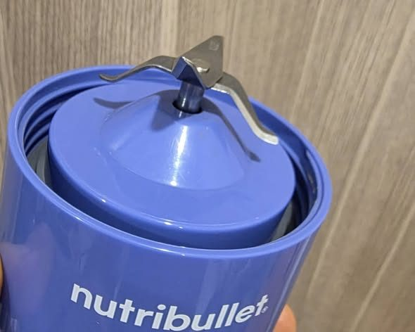

An toàn thực phẩm
Máy xay cối nhựa, hạt vi nhựa và chuyện chọn hộp đựng đồ ăn

Chị em nhìn hai cái đế lưỡi dao ở ảnh trên nhé: một cái mới tinh, một cái đã xay khoảng một năm. Chỗ nhựa quanh lưỡi bị bào mòn, sứt xước thấy rõ – mà phần nhựa mất đi ấy không tự biến mất đâu ạ, nó đi vào cốc sinh tố, bát cháo xay của nhà mình đấy 😔

Ảnh thứ hai là đế một chiếc máy xay loại tốt hơn, cũng dùng khoảng một năm để xay hoa quả đông lạnh mà phần nhựa vẫn còn khá lành. Đồ rẻ đôi khi lại thành đắt là thế.
Hạt nhựa siêu nhỏ đáng ngại ở đâu?
Hạt nhựa nano bé từ một phần tỷ đến một phần triệu mét. Bé thế nên:
- Chui được qua màng tế bào, qua niêm mạc ruột, thậm chí qua nhau thai.
- Tích lại trong cơ thể: các nhà khoa học đã tìm thấy hạt nhựa trong máu, phổi, sữa mẹ, mô tim, cả trong mảng xơ vữa động mạch.
- Thí nghiệm trên tế bào và động vật cho thấy chúng có thể gây viêm, gây tổn thương tế bào, và có thể ảnh hưởng nội tiết.
Nói cho công bằng: phần lớn mới là nghiên cứu trong phòng thí nghiệm, mức hại thật sự trên người còn đang được tìm hiểu. Nhưng bớt được thì mình cứ bớt, có mất gì đâu các bác.
Máy xay cầm tay cũng không phải “an toàn tuyệt đối”
Đại học Stockholm (Thụy Điển) năm 2014 thử 12 chiếc máy xay cầm tay mua ở cửa hàng, thấy 8 chiếc thải paraffin clo hóa – một loại hóa chất bền, tích lại trong cơ thể – vào đồ ăn khi dùng bình thường. Nghiên cứu tiếp năm 2017 cho thấy chất này đến từ bộ phận ngay phía trên lưỡi dao.
Loại nhựa nào “hiền” nhất?
Chưa có loại nào được chứng minh là ít thôi nhiễm nhất, các nghiên cứu còn cãi nhau. Em tóm lại thế này:
- PP (số 5): ở điều kiện thường khá ổn. Nhưng quay lò vi sóng thì khác hẳn – nhóm nghiên cứu ở Nebraska (Mỹ) đo được hộp PP đựng đồ ăn trẻ em thải ra rất nhiều hạt nano.
- PET (số 1): hộp mang đi, chai nước dùng một lần. Chai nước sinh hạt nhựa nhiều nhất do vặn nắp và để ngoài nắng.
- PE (số 2, số 4): mềm, dễ mòn; túi PE thả nhiều hạt hơn hộp PP.
- PS (số 6, hộp xốp): gặp nước sôi thả nhiều nhất. Tránh đựng đồ nóng.
- Melamine: càng rửa nhiều càng thả nhiều.
- Silicone, Tritan, PC (cối máy xay loại tốt): bền nhiệt, cứng hơn, nhưng chưa có dữ liệu chắc chắn rằng thả ít hơn.
Ba thứ quan trọng hơn tên nhựa
- Nhiệt: lò vi sóng và nước sôi làm số hạt tăng vọt.
- Ma sát: xay, cắt, cọ bằng miếng nhám.
- Tuổi: nhựa xước, đục, giòn thả nhiều hơn nhựa mới.
Chọn thế nào cho yên tâm
- Đồ nguội, khô, ít cọ xát: hộp PP hoặc HDPE còn mới là được.
- Đồ nóng: tránh hộp xốp, chai PET dùng một lần, đồ melamine cũ.
- Đồ nóng, đồ chua, quay vi sóng, xay, cắt: dùng thủy tinh, inox, sứ. Máy xay thì chọn cối thủy tinh hoặc inox nếu được.
- Hộp nhựa đã xước, đục, ố thì cho nghỉ hưu.
Lưu ý: các nghiên cứu đếm hạt bằng cách khác nhau nên con số giữa chúng không so trực tiếp với nhau được.
Mua máy xay thì chị em chịu khó bỏ thêm tí tiền cho loại tốt, cối thủy tinh hay inox, dùng lâu mà yên tâm hơn ạ 😘
Em tham khảo: Ý tưởng từ bài chia sẻ của anh Dinh Phong Nguyen (facebook.com/aaron.amrak); Đại học Stockholm (2014) và Yuan và cộng sự, Environment International (2017) về paraffin clo hóa từ máy xay cầm tay; Hussain và cộng sự, Đại học Nebraska–Lincoln (2023) về hộp nhựa quay lò vi sóng.
Kinh nghiệm và kiến thức bếp nhà, em viết lại theo cách hiểu của em – không thay lời khuyên của bác sĩ, chuyên gia dinh dưỡng. Thấy chỗ nào chưa đúng, các bác nhắn em sửa nhé.